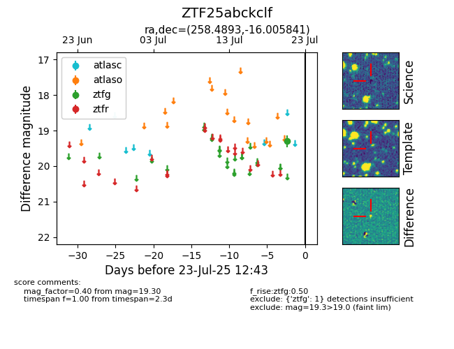

Target ZTF25abckclf at 2025-07-23 11:52, see:
FINK: fink-portal.org/ZTF25abckclf
Lasair: lasair-ztf.lsst.ac.uk/objects/ZTF25abckclf
ALeRCE: alerce.online/object/ZTF25abckclf
alt names
ZTF25abckclf (ztf,fink)
coordinates:
equatorial (ra, dec) = (258.4893,-16.00584)
galactic (l, b) = (6.9738,+13.13632)
photometry
last ztfg=19.30
1 ztfg detections
